Pasos para crear un CRUD en Django
- Seleccionar la carpeta física en la terminal donde estará el proyecto:
cd/Desktop/pia. - En la misma consola/terminal crear el nuevo proyecto
django-admin startproject modulo - Una vez creado el proyecto, abrimos la carpeta en Visual Studio Code y
seleccionamos nueva terminal. Ahí creamos la nueva carpeta que contendrá
las aplicaciones (módulos) de nuestro proyecto.
Windows: md modulo
Mac: mkdir modulo - Ahora nos ubicamos dentro de la carpeta modulo
cd modulo - Una vez seleccionado la carpeta, creamos nuestra primer aplicación / modulo
del sistema
django-admin startapp pedidos - Una vez creado el proyecto volvemos a la raiz de la carpeta
cd .. - Ahora se tiene que registrar la nueva aplicación creada en el archivo settings.py de la carpeta principal (pia)
- En el mismo archivo settings.py configurar el nombre de la base de datos SQLite 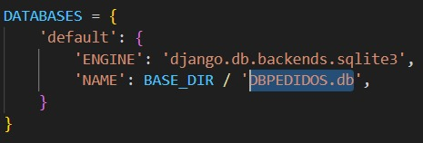
- Sobre el mismo archivo settings.py habrá que configurar el lenguaje y zona horaria para la configuración del proyecto. 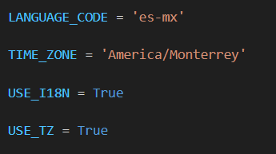
- Ahora dentro de la aplicación creada (pedidos) seleccionamos el archivo models.py para crear la arquitectura/modelo/clase que permite el mapeo de objetos relacionados “ORM” para la gestión de los datos en la base de datos. 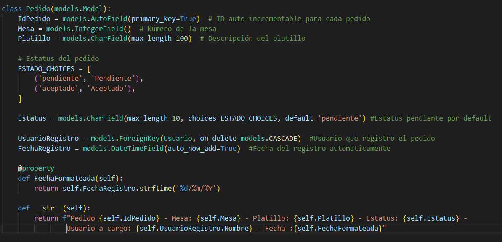
- Sobre la misma carpeta seleccionamos el archivo admin.py el cual permitira la gestión de la información con el administrador de Django. 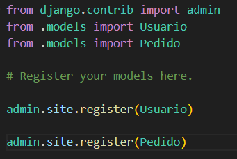
- Volvemos a la terminal para realizar la migración inicial de nuestro proyecto
(ejecutar y registrar cambios), en la terminal se escribe el siguiente comando.
python manage.py migrate
NOTA: Debemos estar en la carpeta raiz del proyecto (pia). Si marca error hay que revisar el archivo app.py y colocarle el nombre de la carpeta.
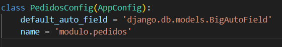 - Ahora debemos migrar el modelo creado como una tabla de SQL por eso desde
consola colocamos la sentencia.
python manage.py makemigrations - El superusuario va a permitir interactuar directamente con la interfaz de django
para el funcionamiento de permisos de administrador.
python manage.py createsuperuser
Ignoramos el error y colocamos usuario, correo y password
Una vez hecho este paso volvemos a ejecutar
python manage.py makemigrations - Limpiamos/cerramos la terminal y ejecutamos el sevidor
python manage.py runserver - Listo, ahora que esta configurado podemos entrar al panel de adminsitrador colocando la liga http://127.0.0.1:8000/admin Ingresamos con usuario y contraseña creada en el paso 14 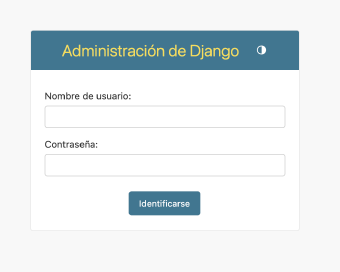 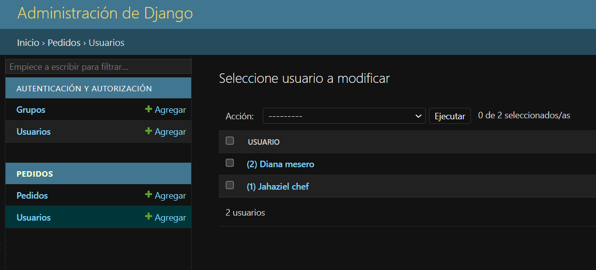
- Una vez creado el usuario y entrado a admin tenemos que hacer una nueva
migracion (por cada cambio aplicado) para poder crear registros y ver cambios.
python manage.py migrate
NOTA: Si al actualizar el admin marca el error 404 es porque el servidor de apago, por lo que es necesario volver a ejecutarlo (paso 15). - Realizamos un registro de prueba dando clic en el boton “Agregar” dentro de la
tabla.
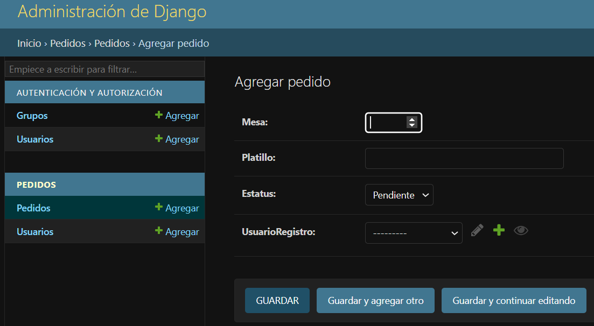
Si todo esta bien, veremos el resultado de la pantalla anterior, el problema es que no se distingue el registro (paso 19). - En el archivo models.py dentro de la carpeta aplicación hay que agregar un metodo str para poder crear una “vista” de registros dentro de los registros de la base de datos. 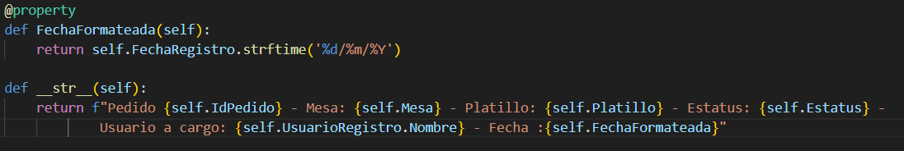
- Ahora bien, se tienen que crear las interfaces graficas/templates HTML + CSS
JavaScript para que el usuario interactue con la aplicación.
Para este paso se puede cerrar sesión del admin de django y podemos apagar
el server (CTRL + C en consola) y la cerramos.
Dentro de la carpeta de módulo damos clic derecho y creamos una nueva carpeta bajo el nombre de templates, hay que respetar este nombre porque django reconoce a la caperta como la contenedora de los archivos HTML.
NOTA: En caso de colocarle otro nombre es necesario crear una configuracion adicional, pero no se recomienda.
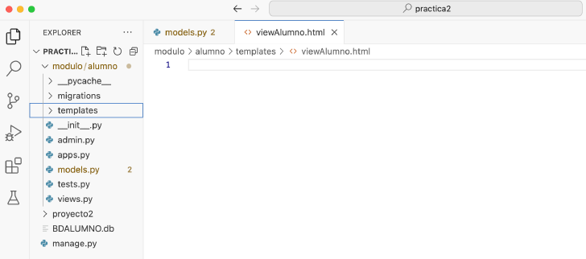 - Dentro de la carpeta templeates creada agregamos un nuevo archivo html.
En este caso se le donomino “adminAlumno.html”
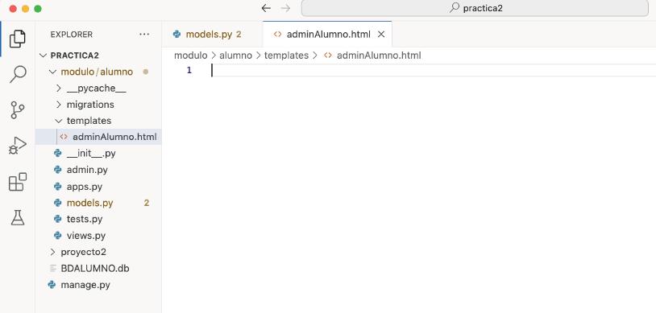
En este archivo se crea toda la interfaz grafica de la aplicacipon utilinzado HTML5 + CSS + JavaScript y adicional algunos frameworks externos como bootstrap, fontawsome, etc.
Ejemplo:
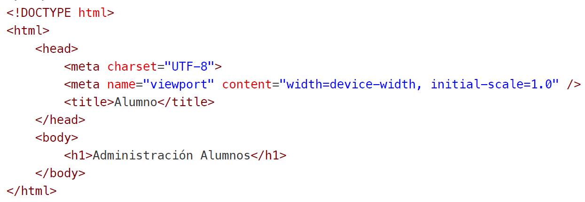 - Para configurar el proyecto para que reconozca la página web por medio de la interfaz debemos crear un nuevo archivo urls.py dentro de la aplicación para posteriormente configurar la nueva ruta de acceso. 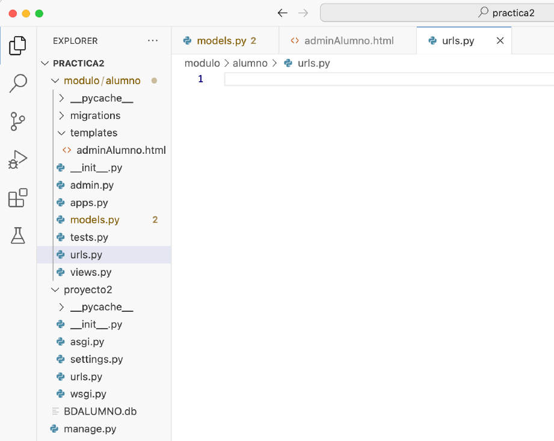
- Ahora debemos configurar el archivo views.py para poder acceder a la ruta creada en el archivo urls.py creado anteriormente. 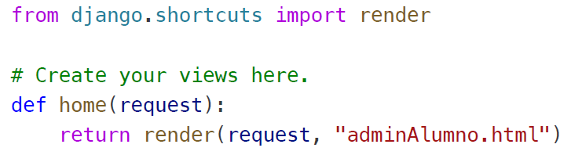
- Posteriormente, vamos a la urls.py del proyecto en general y agregamos el conjunto de las rutas creadas dentro de las urls.py de la aplicación, para eso modificamos el archivo para que quede de la siguiente manera. 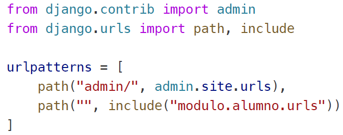
- Volvemos a abrir una terminal y ejecutamos el runserver Obtenemos el siguiente resultado 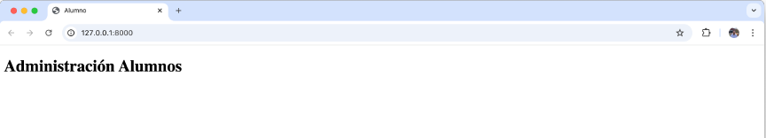
- Si todo es correcto, ahora vamos a listar los registros de las bases de datos a la interfaz. Para este paso nos dirigimos a views.py de la aplicación y modificamos lo siguiente. 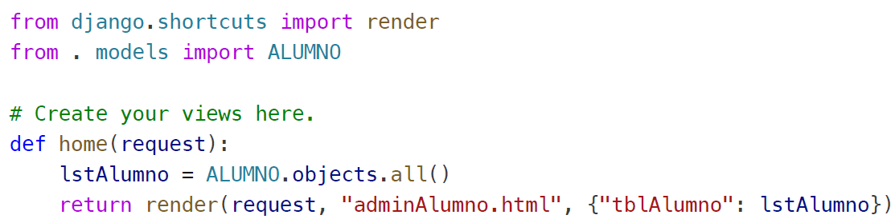
- Ahora en la interfaz agregamos una lista para mostrar los registros. 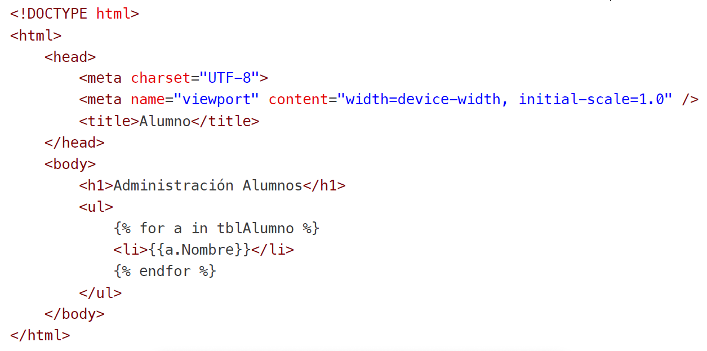 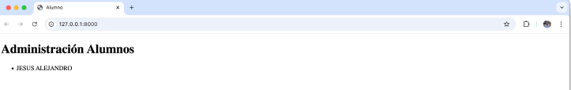
- Para dar diseño se utilizará principalmente Bootstrap y CSS para evitar pegar los cdn y todos los scripts en cada una de las paginas vamos a crear un diseño general para todo el sitio, para eso creamos un archivo plantilla.html donde se encuentra el adminAlumno.html y vamos a pegar toda la estructura HTML y referencias externas.
- Como ya se tiene una plantilla, el archivo adminAlumno.html, ahora solo
quedara de la siguiente manera.
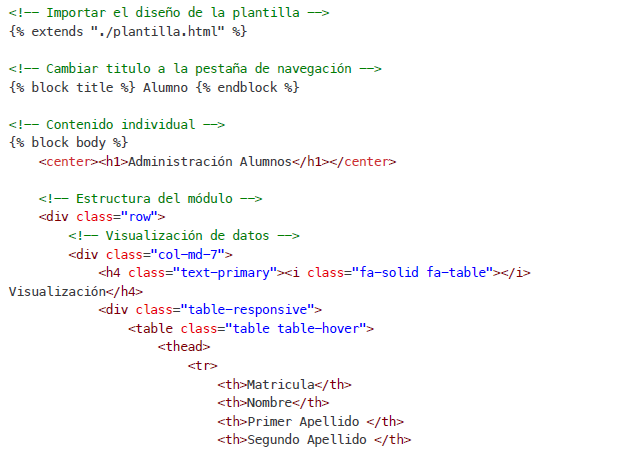
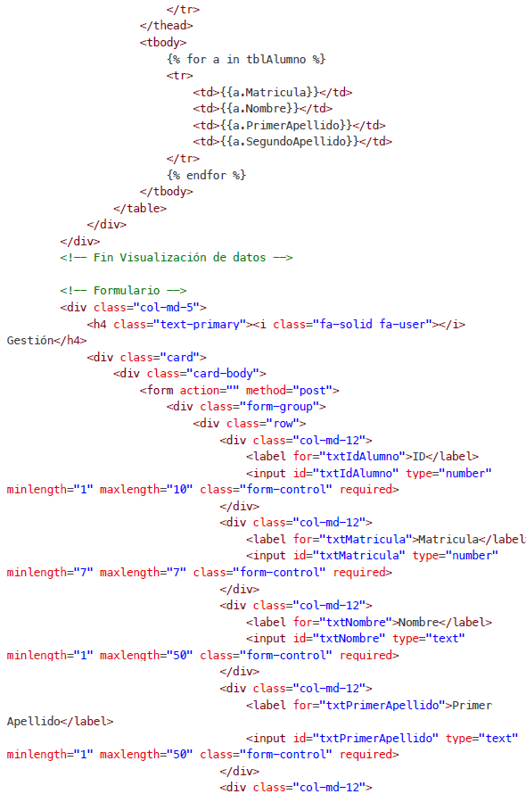
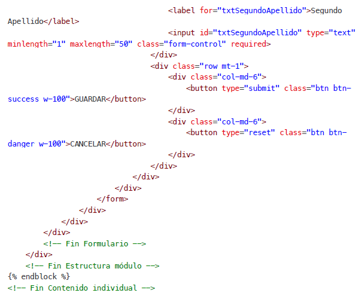
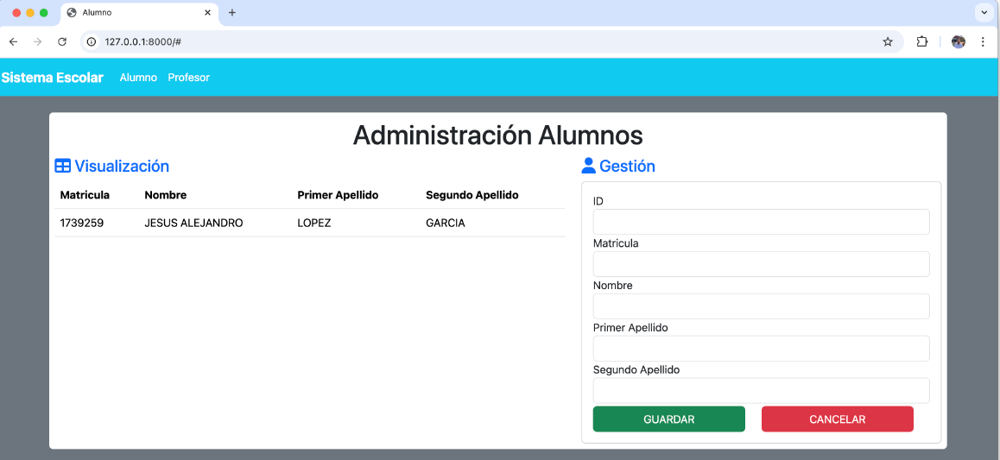
NOTA: Se tienen que agregar todos los campos
CONFIGURACIÓN INICIAL DEL PROYECTO Y APLICACIÓN WEB

CONFIGURACIÓN DE CONTROL ADMINISTRATIVO DJANGO (SUPER USUARIO)
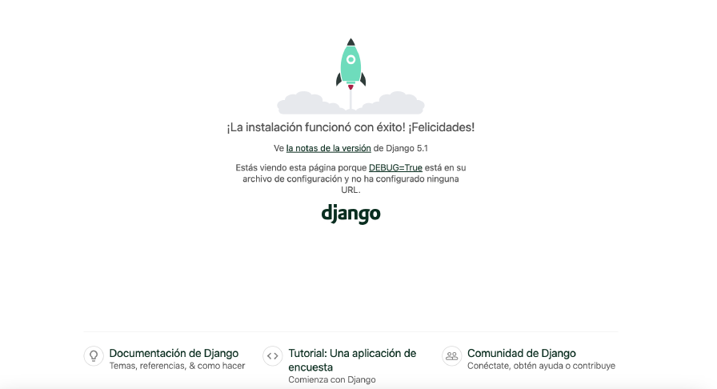
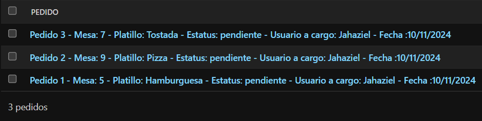
CREAR INTERFACES GRAFICAS
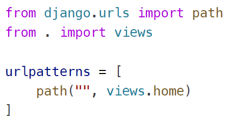
 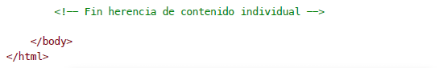
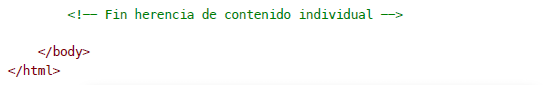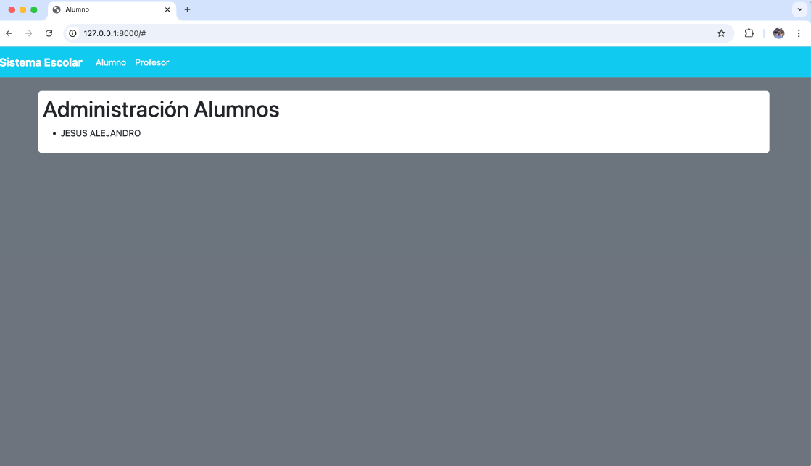
FUNCIONALIDADES DEL CRUD EN DJANGO
Para comenzar a dar la funcionalidad correspondiente a un CRUD.
CREATE
- Debemos definir el botón Guardar de type submit, que es importante recordar que está
dentro de las etiquetas de < form >.
En el < form > se debe definir el action y el method, de la siguiente manera:
a. action: /registrarAlumno/ (define la ruta de acceso a donde se enviarán los datos del formulario)
b. method: post (método para obtener los datos externos de un formulario)
Adicionalmente debemos agregar de igual forma el bloque csrf_token que es una forma de “proteger” la información enviada al servidor.
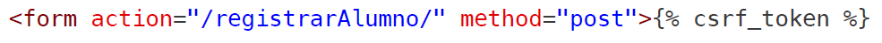
- Ahora debemos crear la URL que se definio anteriormente para el envio del formulario, dentro del archivo urls.py de la aplicación. 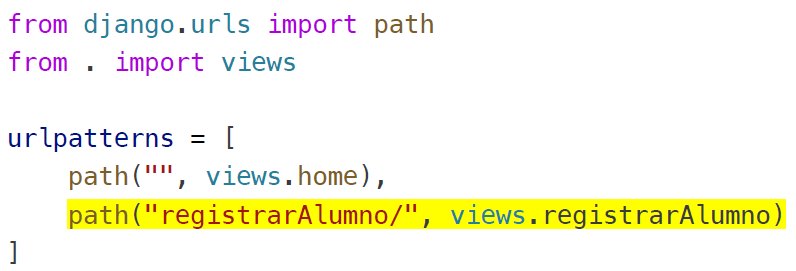
- Marcara un pequeño error en la terminal debido a que aun no existe la vista
registrarAlumno, por lo que debemos crearla dentro del archivo views.py de la
aplicación, en esta vista se define la función que recibe los datos del formulario
desde la interfaz gráfica.
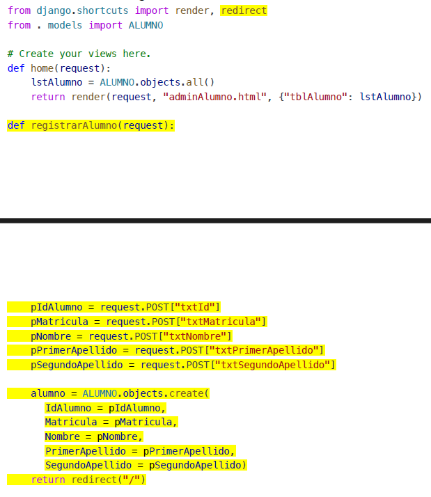
NOTA: Aquí van todos los campos de la tabla que son obligatorios. Se importa la librería redirect que permite redireccionar la aplicación después de realizar cierta acción, posteriormente la función “registrarAlumno” obtiene todos los valores de los input de la parte grafica y los asigna a los objetos del modelo. Por ultimo se hace la función “INSERT” a la base de datos por medio del método create se le pasan todos los parámetros y retorna al inicio.
NOTA: Para este punto si no funciona, se recomienda apagar y volver a ejecutar el servidor.
Apagar: CTRL + C desde la terminal donde se esta ejecutando.
En caso de marcar error hay que agregar la propiedad name a los controles con el mismo Id.
Ejemplo:
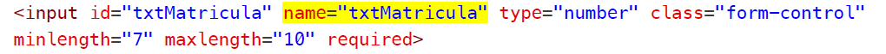
Listo, ya deberia estar hacienda registros.
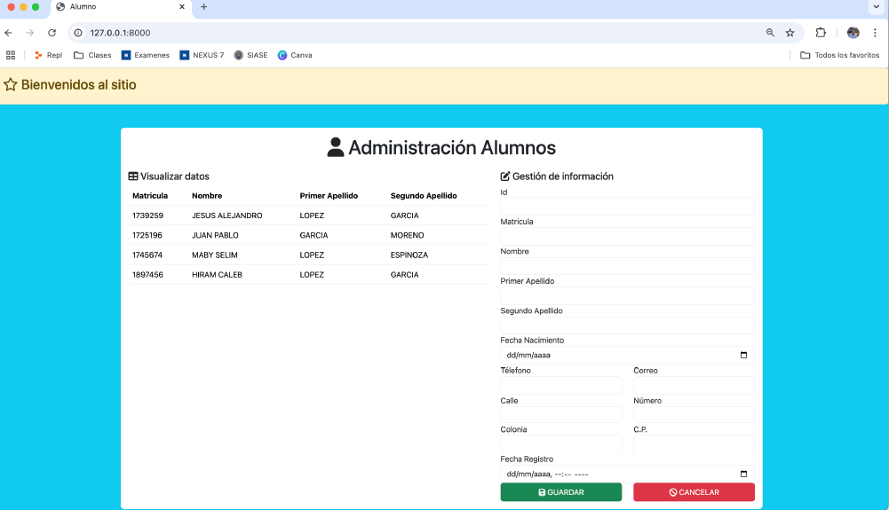
READ
Esta acción basicamente ya la habimos desarrollado en el archivo anterior, donde
listamos los campos de la base de datos en la tabla.
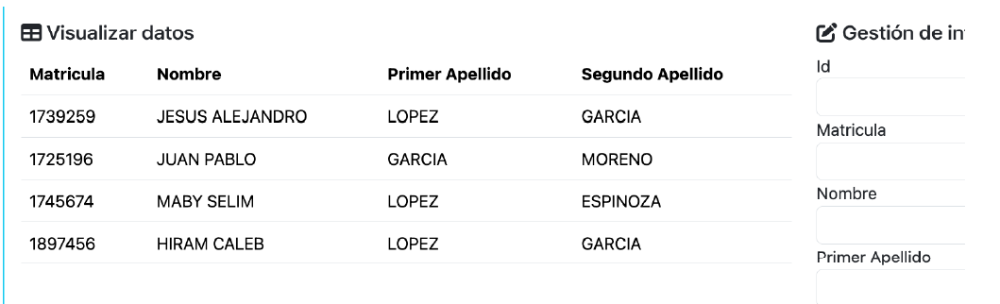
Antes de hacer las acciones siguientes de editar y eliminar, es necesario diseñar los
controles que permitan realizar dichas acciones, para eso nos vamos al archivo
adminAlumno.html que contiene la interfaz del modulo y editamos la tabla.
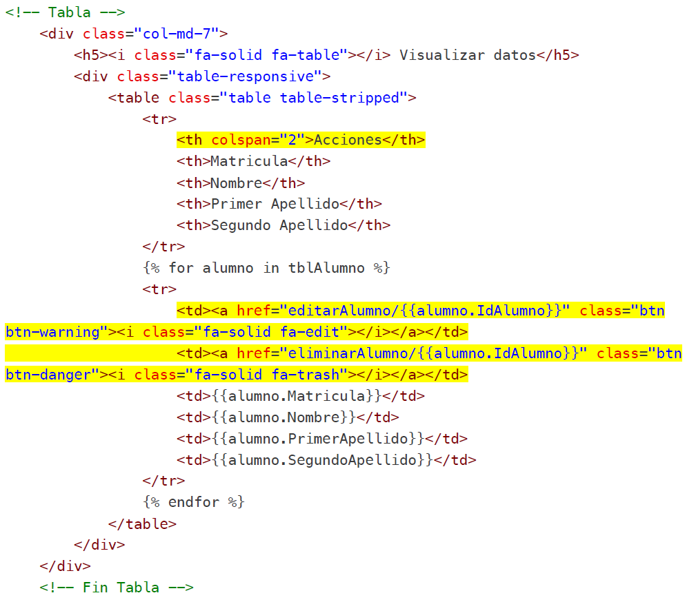
Básicamente se agrega una nueva columna < th > que va agrupar los botones
correspondientes de tipo < a > y dentro del contenido se agregar ambos en un < td >
Los botones tienen que estar definidos como links < a > debido a que harán
una redirección a la accion correspondiente.
El href se definen las rutas de las acciones y se les pasa el valor del Id con el
que se aplicaron los cambios en la base de datos.
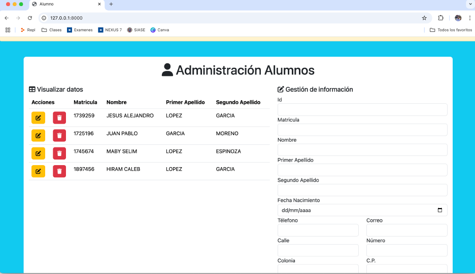
UPDATE
En el archivo de urls.py de la aplicación creamos la ruta para la acción de editar
en el urlpatterns.
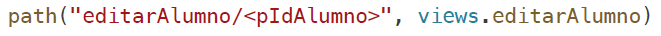
En el archivo views.py de la aplicación creamos la funcion que reciba el
parametro para que realice la redirección a una nueva página web html que
contenga un formulario para editar.
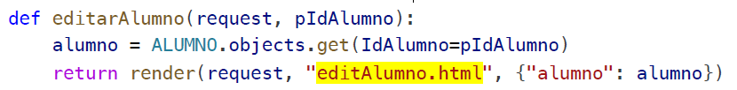
Creamos la nueva página web editAlumno.html dentro de la carpeta de
templates.
Seria igual al formulario de registro pero con ciertas modificaciones como:
• Cambio de titulos para que haga referencia a la edición
• Sólo el formulario sin tabla
• Bloqueo de controles readonly para solo lectura
• Cambio en el action del < form > por la ruta de edición
• Values en cada control para obtener los datos de la base de datos de
acuerdo con el Id seleccionado
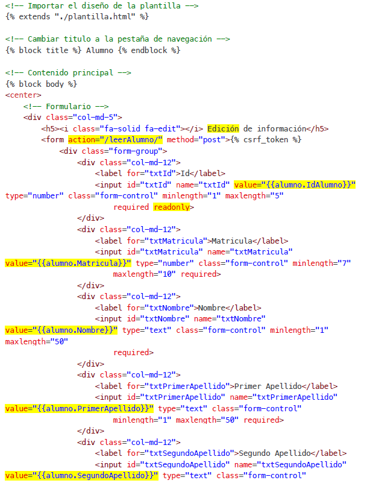
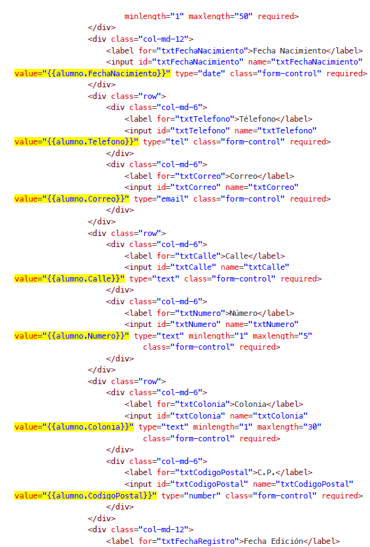
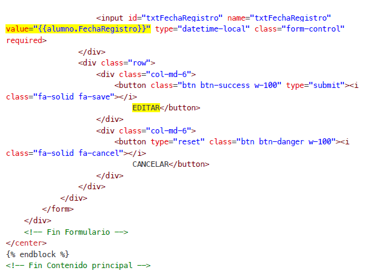
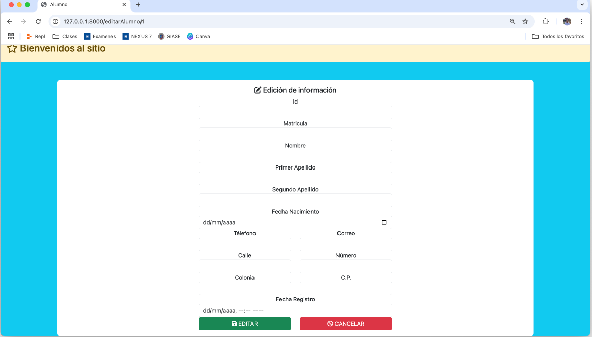